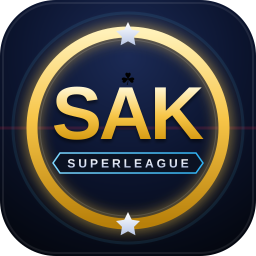

The playoff pool, counted live.
The playoff box pool, the bracket and pick the series, with every goal, assist and goalie win counted as it happens. Never money.
The field is set Saturday 10 April. Start a box pool on the season now, and add the playoff pool in a tap that nightThe playoff pools are open. Entries and brackets lock at the first puck drop of round 1The playoffs are on. Pick the series opens each round as its matchups are setThe Cup has been won. Playoff pools open again next April
Points move with every goal from the NHL's box scores, the feed that scores the SaK Superleague each night.
The next deadline
From the appHockey as it stands, straight from the app, with the next puck drop counting down.
Swipe for every event
Five ways to play the playoffs.
Tap one and name your pool. Until the field is set on 10 April the start page opens on the regular season's box pool and says so; the playoff pool is one tap to add the night it opens, same pool, same crew.Tap one and the start page opens on it. Run two or three in the same pool: they share one table and one chat.
- The playoff box poolOne player from each box, dealt on the games each is expected to play. Goals, assists and goalie wins count to the last night of the final.Before round 1Start
- The bracketAll 15 series picked before the first puck drop, each round worth double the last, with a point for calling how many games.Before round 1Start
- Pick the seriesCall each series and how many games it goes, round by round. Later rounds open as their matchups are set, so a late joiner still plays.Each roundStart
- The prop sheetEight calls on one playoff game, a point each, settled from the score by period.Any gameStart
- Squares by periodA grid on a series, paid after the 1st and 2nd periods and the final of every game.Any seriesStart
- The sweepstakeEveryone is dealt playoff clubs from the hat. Nothing to pick: hold the Cup winner and you win it.Pure luckStart
- The box pool, on the seasonThe same game on the regular season: a week, four weeks or the rest of the way. Get the crew in now, and the playoff pool is one tap in April.NHLStart
- Who wins the Cup?The Cup, the Presidents' Trophy and the scoring races, with the group's chance on every answer.Open nowStart
Keeper league? Keepers, the draft room with a clock and a league voice live on the fantasy side.Bring your keeper league
Three steps to round 1.
Start it, send one link
Pick the pool, name it and drop the link in the group chat. Poolies join with just a name, in the browser, and any number can play.
Pick before the first puck drop
One player from every box, or the whole bracket, before round 1 starts. Pick the series stays open round by round.
It counts itself
Goals, assists, goalie wins and shutouts land live from the box scores, every finished game is re-checked, and the table moves all spring.
One entry, alive all spring.
Your players, what each has scored and whose club is still playing. Take stars from a team that goes deep and the points keep coming.
- Box1MacKinnon COL · leads 3-1 · 4G 5A9Forwards · also McDavid, Kucherov, Matthews, Draisaitl
- Box2Kaprizov MIN · 2nd, 8:14 · 2G 3A5Forwards · also Pastrnak, Rantanen, Eichel, Point
- Box3Batherson OTT · out in 5 · 1G 2A3Forwards · also Hischier, Tkachuk, Zibanejad, Larkin
- Box4Makar COL · leads 3-1 · 1G 4A5Defence · also Hughes, Werenski, Fox, Hedman
- Box5Hellebuyck WPG · tied 2-2 · 2W4Goalies · also Shesterkin, Vasilevskiy, Sorokin, Oettinger
Goal 1 · Assist 1 · Goalie win 2 · Shutout 1 · counted to the last game of the Cup final
Built by a league.

The founding league has run on Super Pools every night of the 2026-27 season, from the keeper deadline on.
- Scored from the NHL's own box scores, the feed that has scored the founding league every night this season.
- Every finished game is re-checked for three days, so a changed assist changes the table.
- The bracket and the series picks settle from the NHL's bracket, and your host can set a result for the pool alone, with the reason on the record.
Before you ask.
Is it free, and is there any money in it?
It is free, and there is no money in it. Entries play for points and a crown, and Supercoins are never bought, never sold and never turned into money. If your pool collects dues, that stays between friends.
How does a playoff box pool work?
The top playoff players are dealt into evenly matched boxes: forwards, then defence, then goalies. Each poolie takes one from every box before round 1. A goal or an assist is a point, a goalie win two and a shutout one, counted to the last game of the Cup final. The host can change the points before the deadline.
When can I start one?
The playoff pools open the night the field is set, Saturday 10 April 2027, and lock at the first puck drop of round 1. A box pool on the regular season can start tonight, and its host adds the playoff pool in one tap in April, with the crew already in.
Can two poolies take the same player?
Yes. Boxes are not a draft, so the same player can be on every entry and any number of poolies can play. No draft night needed.
How is the bracket scored?
One point for each first-round series, two in the second round, four in the conference finals and eight for the Cup, plus a point for calling how many games a series goes. Flat scoring is the other choice.
What if someone joins after round 1 starts?
The box pool and the bracket are locked by then, but pick the series opens fresh each round, and prop sheets and squares go on any game or series still to come.
Do my friends need an app?
No. They tap your link and join with just a name, in the browser on any phone. Add it to the Home Screen for alerts if you like.
Get the crew in before round 1.
A minute to set up, one link for the group chat, and poolies join with just a name.